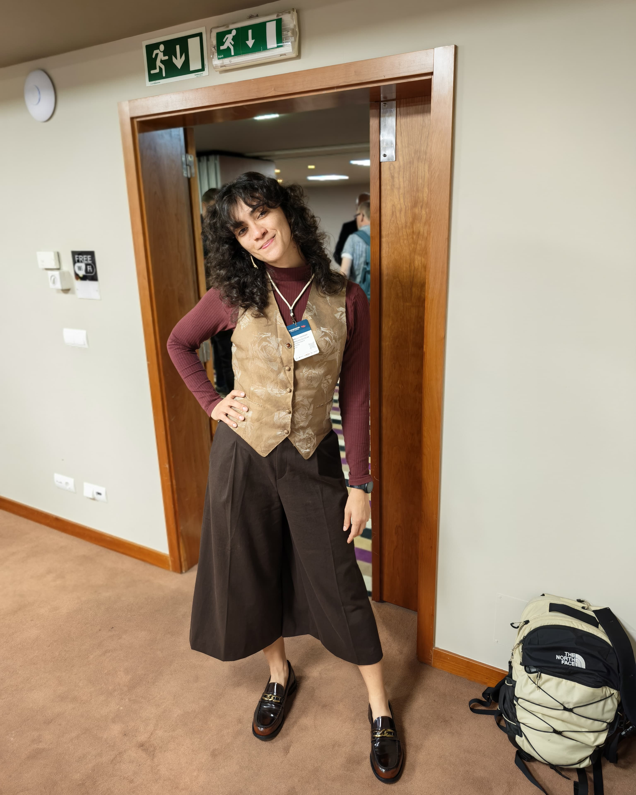

Water quality parameters
Routine characterisation of water and effluents.
pH · conductivity · turbidity · solids · COD/BOD

Physical chemist, from the lab bench to the simulation box.
Den Haag, The Netherlands
I bring experimental laboratory science and computational chemistry together. For three years I was the technical manager of a water and wastewater testing laboratory in Brazil, running physicochemical and microbiological analyses and keeping results traceable under ISO/IEC 17025.
Today I am a PhD candidate in Physical Chemistry at UNICAMP and a guest researcher at TU Delft, where I use molecular dynamics to understand proteins, antibodies and the solvents around them, with an eye on vaccines and pharmaceuticals.
I know what a measurement means because I have made it, and I know what drives it at the molecular level because I have simulated it. I am looking for roles in pharmaceutical, biotech, analytical, R&D and computational chemistry.
Taking responsibility for results, and helping others get there too.
Hands-on bench work on water and industrial wastewater: the methods that turn samples into numbers someone can act on.
Routine characterisation of water and effluents.
The fundamentals, done carefully and documented.
Spectrophotometric methods and automated discrete analysis.
Sanitary quality of water samples.
Making sure results are right, traceable and reproducible, every time.
Molecular understanding for vaccines and therapeutics: how antigens move, how antibodies recognise them, and what keeps them stable in formulation.
comp computational · exp experimental
Enhanced-sampling MD of the malaria antigen PfAMA1 bound to a monoclonal antibody, showing an extended conformational selection mechanism (MSc, J. Phys. Chem. B 2024).
Review of disordered malaria antigens and how molecular simulation can open them up for drug and vaccine development (J. Braz. Chem. Soc. 2024).
PhD work on how ionic liquids solvate and stabilise antigen proteins, as candidates for vaccine adjuvants.
Scientific initiation in the Molecular Modeling Laboratory at UFPA (2015–2017), recognised as a highlight of the university's initiation programme.
Computational chemistry of biomolecular systems: explaining macroscopic behaviour from molecular interactions.
Kirkwood–Buff theory and minimum-distance distribution functions to quantify how proteins are solvated in mixed solvents and ionic liquids.
Self and collective diffusivities and viscosity from equilibrium MD.
Conformational selection, docking and refinement of antigen–antibody complexes.
Intrinsically disordered regions and how mutations shift order and disorder.
Julia tooling that builds, runs and analyses GROMACS simulations end to end.
I solve problems in four languages. Two for people, two for computers. Click one 👇